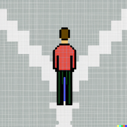
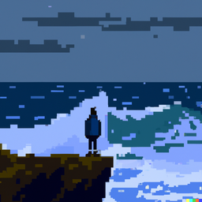
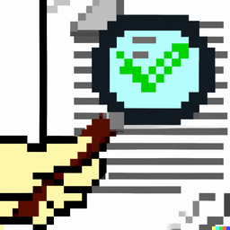
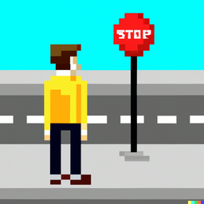
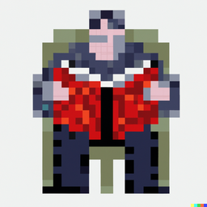

Cognitive Hacks Defense Strategy
Here are some key defense mechanisms to protect yourself against cognitive hacks:
-
Mind your biases: Be aware of your own biases and strive to remain objective when evaluating
information. Example: Believing fake news on social media.
-

Think before acting: Pause and carefully consider different options before taking action.
Example: Acting impulsively on an email scam.
-

Be skeptical of emotions: Maintain a rational and clear-headed perspective in the face of
emotionally charged messages. Example: Fear-mongering political ads.
-

Trust, but verify sources: Scrutinize and verify sources before accepting information as true.
Example: Sharing unverified memes on social media.
-

Stop, look, think before sharing: Carefully examine potential risks and consequences before
sharing personal information online. Example: Giving out personal information in response to a phishing
email.
-

Stay informed to protect: Continuously educate yourself and stay up-to-date in order to protect
against new forms of cognitive hacks. Example: Believing outdated medical information.
-
 Knowledge is power: Use knowledge to make informed decisions and protect yourself against
cognitive hacks. Example: Falling for conspiracy theories, such as believing that the moon landing was
faked (moon_landing_conspiracy_theory) or that the Earth is flat (flat_Earth_conspiracy_theory).
Knowledge is power: Use knowledge to make informed decisions and protect yourself against
cognitive hacks. Example: Falling for conspiracy theories, such as believing that the moon landing was
faked (moon_landing_conspiracy_theory) or that the Earth is flat (flat_Earth_conspiracy_theory).